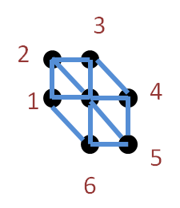
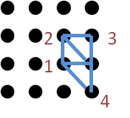
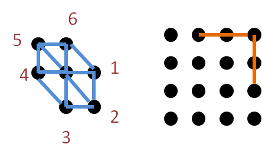
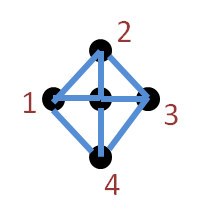
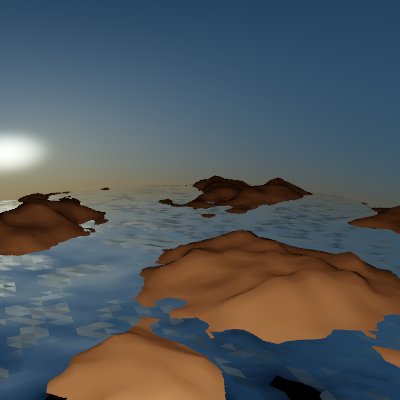
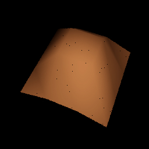
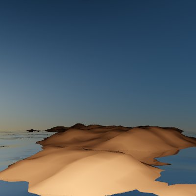
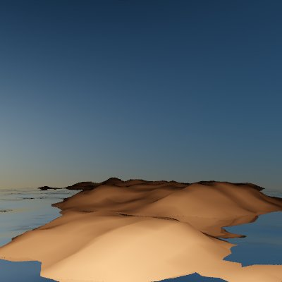

Algorithm:
- Intersection:
The idea is almost the same as 3-D DDA. First, we check if the ray intersect with the overall grid bound. Second, we setup the parameters for positive or negtive ray-direction. And then, I divide each voxel into two different triangles to test if there is a hit point.
- Normals:
When I assign the normals at every vertexs, I suppose every vertex has six adjacent vertexs. If adjacent vertexs are not out of bound, I caculate normals in order from those triangles which adjacent vertexs contribute.
But at some vertexs, I need to change the order otherwise I will caculate the wrong normal. For example, the point 3 and point 4 will be crossed but it should not.
So the order will be changed to another order at those below points.
By the way, I also use another method to assign normals.
Let's look at the black area of the right bottom corner to see the difference.

Left: "6 adjacent triangles". Right: "4 adjacent triangles"
- Smooth Methods:
In Phong interpolation, I get N1 from interpolating the two normals of P2 and P3. And N2 from interpolating the two normals of P1 and P2. Then I get the normal of hit point from interpolating N1 and N2.

Let's look at what is the difference between "Phong interpolation" and "Barycentric interpolation".
Left: "Barycentric interpolation". Right: "Phong interpolation"
 

From the above pictures, we know our eyes can not tell the difference between the two methods, T^T.
Bugs:
- W2O and O2W:
This bug happens when I caculate the normal of hit point. It makes my scene have large unknown black area. Furthurmore, my big scene have unknown sea waves which makes me feel very weired.
- Phong:
When I use Phong Interpolation, I forget to project points to 2-D plane. So I get non-smooth surface even Phong had been applied. From here, we know we must check which space we can use, 2-D or 3-D, before applying algorithms.
Comment:
Even the most of code I borrow from PBRT, I'm still suffering form those bugs. Especially in the "GetShadingGeometry", it took me several hours to find it out. The reason is that eventhough your code will not crash but the bug makes your scene be very strang and very hard to trace, T^T.